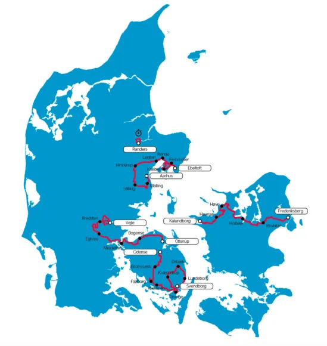

Squadra Molteni tilfreds med ruten til Kongeetapen 2017

Ruten til PostNord Danmark Rundt 2017 er nu offentliggjort – og dermed også ruten til Kongeetapen 2017, der køres 14. september – og selvfølgelig med deltagelse af et Squadra Molteni mandskab.
Ruten bliver på 180 km – med start i Otterup. Ruten går over Nordfyn, Bogense, Lillebælt, Egtved og bakkerne i Vejle Ådal inden finalen på Kiddesvej.
– De små smalle veje på Nordfyn kender vi fra mange af de nordfynske forårsklassikere. Dét er lige vores terræn. Og bakkerne efter Egtved ligger altid godt og taktisk for os – inden vi lukker fuldt op på finalebakkerne i Vejle, lyder det fra retroholdets HQ i Vejle.

Squadra Molteni har endnu ikke offentliggjort deres sæsonplan for 2017, men Kongeetapen er helt sikkert at finde på planen.
– Vi stiller naturligvis, som de foregående år, et stærkt hold til Kongeetapen. Og vi kan også bekræfte, at vi efter målgang er at finde ved den orange ølscooterbil i målområdet…